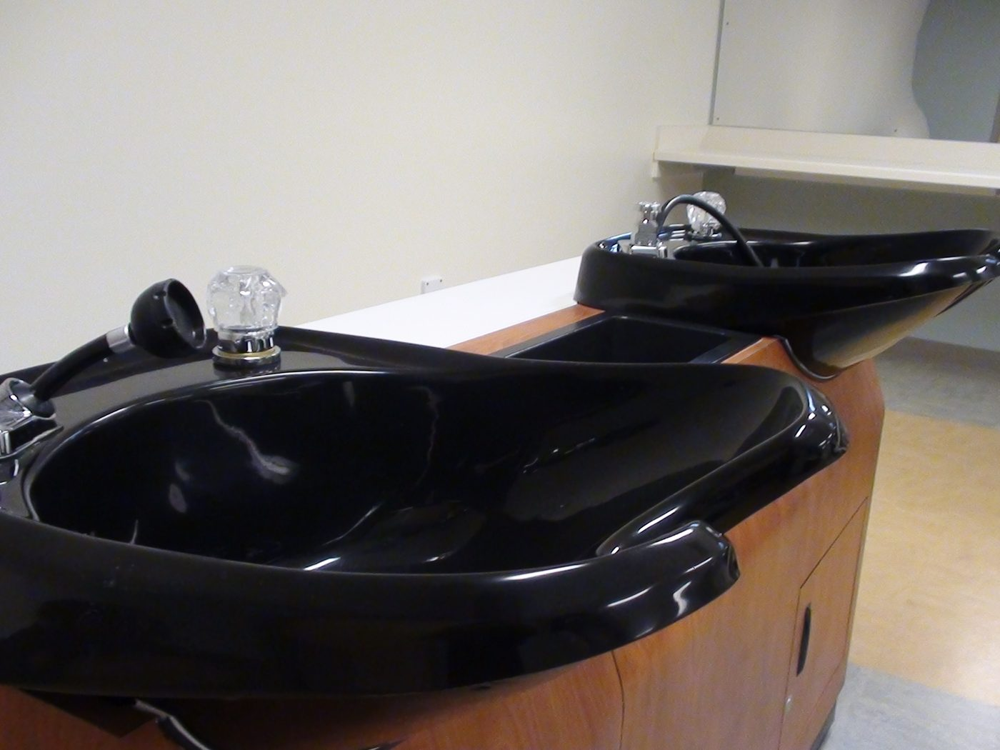

Plan de route
Même parcours que la version standard, avec des consignes plus courtes. Les durées des activités ne sont pas indiquées ici, sauf le rappel de cinq minutes au début de chaque séance. Le film de l’écoute dure environ trois minutes.
-
Séance 1 · The Consultation
Accueillir un client, poser les questions de la fiche, et s’entraîner au jeu de rôle. Le lexique de la coupe se trouve aussi dans cette séance.
Point d’arrêt possible. On s’arrête après le jeu de rôle. La fois suivante, on reprend au lexique de la coupe, puis à l’écoute.
-
Écoute · a cut in a London salon
Repérer le lexique dans la vidéo de Tom Warr et répondre aux trois questions.
Sortie de secours. Si la vidéo ne passe pas, on travaille seulement le lexique de la coupe, déjà sur la page.
-
Séance 2 · The Exam Rubric
Lire les critères du jury, s’évaluer et donner un retour en anglais.
Point d’arrêt possible. On s’arrête après le travail sur la grille. La fois suivante, on ouvre la séance 3.
-
Séance 3 · The Chemical Chart
Choisir l’oxydant, justifier le choix, et donner les consignes de sécurité.
Point d’arrêt possible. On s’arrête une fois le tableau compris. La fois suivante, on passe aux questions du jury.
Sortie de secours. S’il reste peu de temps, on garde trois oxydants et une consigne de sécurité.
-
Séance 4 · The Jury’s Tricky Questions
Comprendre les questions du jury et y répondre avec une raison.
Point d’arrêt possible. On s’arrête après les questions. La fois suivante, on enchaîne sur la simulation d’examen.
-
Séance 5 · Exam Simulation
Présenter son travail et répondre au jury, puis remplir la grille d’oral A2.
Sortie de secours. Si le temps manque pour une simulation complète, chaque élève prépare une présentation courte et on utilise seulement la grille d’oral.
Session 1: The Consultation
Welcome a client, ask the right questions and fill in the consultation form.
Recap · 5 minutes
First look: the painting at the top of the page.
- Who painted it, and when?
- Where are we?
- How does the little girl feel?
Answer key
- Norman Rockwell, in 1972.
- In a hair salon (a beauty shop).
- She is amazed, surprised and a little proud: it is her first visit.
The words of the form
| English | En français |
|---|---|
| fine · medium · thick | fins · normaux · épais |
| straight · wavy · curly | raides · ondulés · bouclés |
| dry · oily | sec · gras |
| dandruff | les pellicules |
| a bob | un carré |
Speaking: three questions
Ask your partner. Your partner answers.
- What’s your name, please?
- Is your hair fine or thick?
- How would you like your hair?
- My name is…
- My hair is fine.
- I’d like a bob, please.
Answer key
What’s your name, please? My name is Emma. Is your hair fine or thick? My hair is fine. How would you like your hair? I’d like a bob, please.
Homework
Learn the five lines of words. Say them to a friend or to your phone.
Expanding your vocabulary: the cut
| English | Français |
|---|---|
| fringe | frange |
| curtain fringe | frange rideau |
| layers | dégradé |
| comb | peigne |
| scissors | ciseaux |
| section | mèche |
Listening: a cut in a London salon
Watch the short film. Tick the words you hear. Answer three questions.
Tom Warr is a hairdresser in London, at Blue Tit London. He shows how to cut a fringe. The film is about three minutes. In Britain we say fringe. In American English he also says bangs.
Video: Tom Warr, Blue Tit London, YouTube. Watch on YouTube · Blue Tit London
Key words to spot
Tick the words you hear:
- fringe
- cut
- comb
- scissors
- eyebrows
Questions
- What does Tom cut first: the fringe, or the back of the hair?
- Why does he leave the fringe a little longer when the hair is wet?
- When the hair is dry, where does he want the fringe to sit?
Answer key
Words you hear: fringe, cut, comb, eyebrows. He does not say scissors.
- The fringe.
- So it can jump up when it is dry.
- On the eyebrows.
Session 2: The Exam Rubric
Understand the jury’s criteria, assess your work and give feedback in English.

Recap · 5 minutes
Last session: the consultation.
- Give the three words for hair texture.
- How do you say « les pellicules » in English?
- Ask a client what service she wants.
Answer key
- fine, medium, thick
- dandruff
- What can I do for you today? or How would you like your hair?
Four criteria
| Criterion | En français |
|---|---|
| Safety | La sécurité |
| Sectioning | Les séparations |
| Technique | La technique |
| Finishing | La finition |
Each criterion: 10 points. Total: 40 points. Target: 30.
Speaking: one piece of advice
- Well done!
- You should check your posture.
- You shouldn’t leave the cord on the floor.
Lina’s cord is on the floor. What do you say?
Answer key
You shouldn’t leave the cord on the floor.
Homework
Learn the four criteria. Say one piece of advice to a friend.
Session 3: The Chemical Chart
Choose the right developer, explain why, and give safety instructions.
Recap · 5 minutes
Last session: the rubric.
- How many criteria are there? What is the total?
- How do you say « une mèche témoin »?
- Give one piece of advice with should.
Answer key
- Four criteria; the total is out of 40.
- a guide section
- For example: You should disinfect your tools.
The chart, short version
| Developer | What for? |
|---|---|
| 10 vol | going darker, toning |
| 20 vol | grey hair |
| 30 vol | lighter |
| 40 vol | much lighter, not on the scalp |
Speaking: one choice
- I chose 20 vol because my model has grey hair.
- Put on your gloves.
Your client has grey hair. Which developer?
Answer key
I chose 20 vol because my client has grey hair.
Homework
Learn the four lines of the chart.
Session 4: The Jury’s Tricky Questions
Understand the jury’s questions and answer with a reason.
Recap · 5 minutes
Last session: the chart.
- Which developer is the standard for grey coverage?
- Where must you never use 40 vol?
- Give one safety instruction.
Answer key
- 20 vol (6%).
- On the scalp.
- For example: Put on your gloves.
Three questions, three answers
- Why 20 vol? Because my model has grey hair.
- Round face? I suggest a long bob.
- Before the flat iron? I always apply a heat protectant spray.
Speaking: the hot seat
Your partner asks one question. You answer with the words in bold.
Answer key
See the three answers above. Say them slowly and clearly.
Homework
Record the three answers on your phone.
Session 5: Exam Simulation
Present your work and answer the jury, like on exam day.
Recap · 5 minutes
The whole unit.
- Name two things on the consultation form.
- What is the target score out of 40?
- Which developer for 2 to 3 levels of lift?
- What do you apply before a blow-dry?
Answer key
- For example: hair texture, scalp condition.
- At least 30 out of 40.
- 30 vol (9%).
- A heat protectant spray.
Five sentences for the exam
- Good morning. My name is…
- My model is called…
- Her hair is fine and straight.
- Today I’m doing a bob.
- I wear gloves and I disinfect my tools.
Speaking: your turn
Say the five sentences to a partner. Your partner asks: Why 20 vol? You answer.
Answer key
Because my model has grey hair.
Homework
Record your five sentences. Listen. Try again.